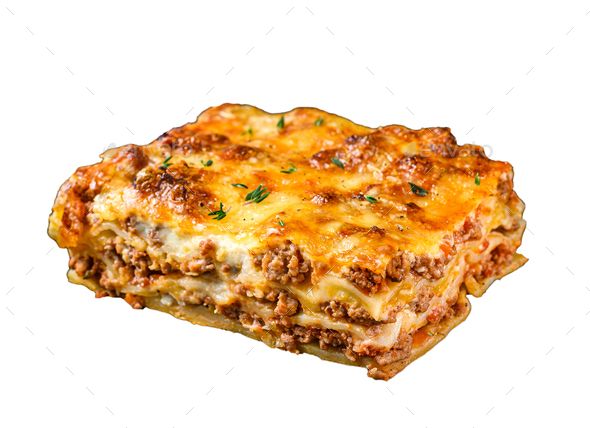

Pizza

Ingredients:
- - 1kg Flour 00tip
- - 300ml Water
- - tomato sauce
- - 100g Mozarella
- - 1g yeast
How to prepare? Make the dough: Mix the dough ingredients together by hand or use a hand-held or stand mixer. Do this in steps as described in the written recipe below. Knead: Knead by hand or with your mixer. I like doing this by hand. If you’re new to yeasted doughs, my How to Knead Dough post and video can help with this step. Rise: Place dough into a greased mixing bowl, cover tightly, and set aside to rise for about 90 minutes or overnight in the refrigerator. Punch & shape: Punch down risen dough to release air bubbles. Divide in 2. Roll dough out into a 12-inch circle. Cover and rest as you prep the pizza toppings. Top it: Top with favorite pizza toppings. Bake: Bake pizza at a very high temperature for only about 15 minutes.
Lasagna
Ingredients:
- - 1kg Flour 00tip
- - 300ml Water
- - tomato sauce
- - 100g Mozarella
- - 1g yeast
How to prepare? Make the dough: Mix the dough ingredients together by hand or use a hand-held or stand mixer. Do this in steps as described in the written recipe below. Knead: Knead by hand or with your mixer. I like doing this by hand. If you’re new to yeasted doughs, my How to Knead Dough post and video can help with this step. Rise: Place dough into a greased mixing bowl, cover tightly, and set aside to rise for about 90 minutes or overnight in the refrigerator. Punch & shape: Punch down risen dough to release air bubbles. Divide in 2. Roll dough out into a 12-inch circle. Cover and rest as you prep the pizza toppings. Top it: Top with favorite pizza toppings. Bake: Bake pizza at a very high temperature for only about 15 minutes.